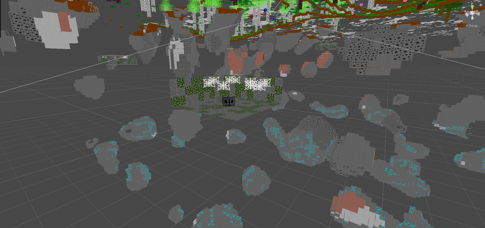
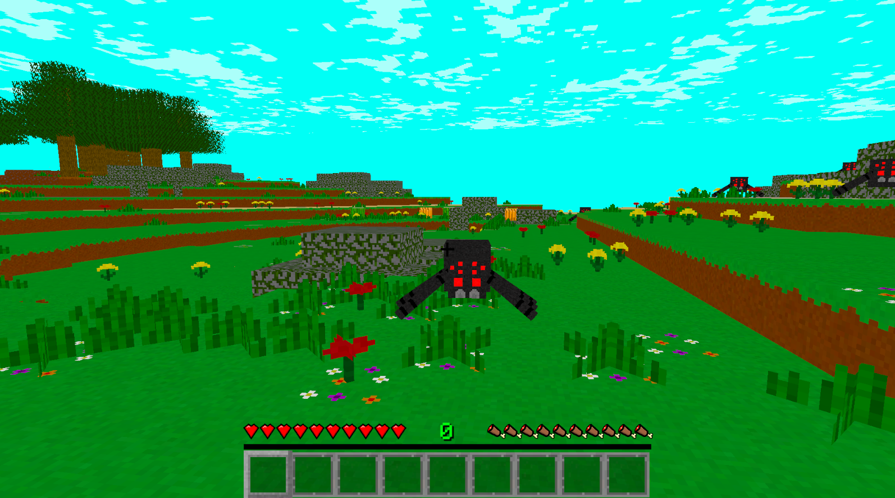
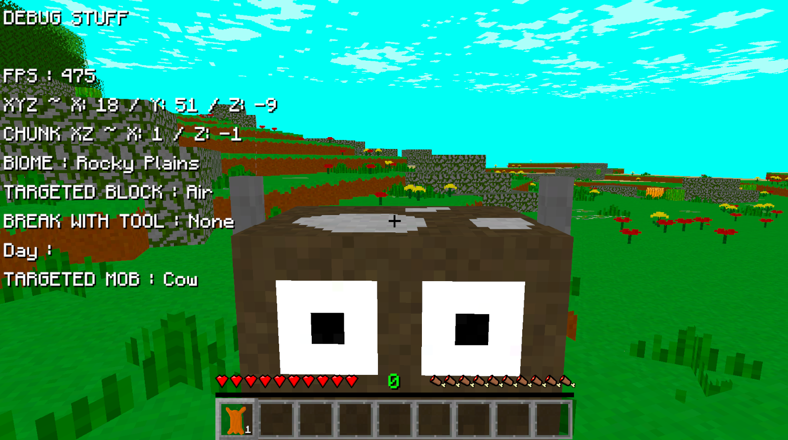
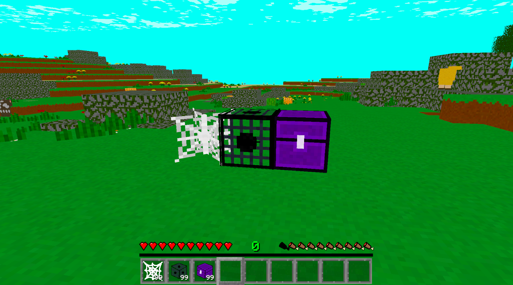
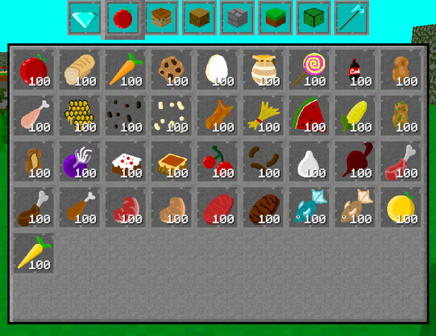

Devlog Fifteen Overview
This devlog update really brings the world to life. Not only is there plant life throughtout the world, but now there is also animal life. The movement for everything is still pretty janky though. But that'll get smoothed out in time as I perfect stuff and figure out exactly how I want everything to move and operate.
For instance, I need to set the sizing of the mobs in code so that they don't enter a block before jumping. But I need to get an idea of how big I actually want these mobs. The cat I thought was fine, but then my sister said it should be bigger. So these are values and sizings I'll slowly get the way I want as I see more of them in the gameplay.
Also this devlog will be a little sparse on the pictures and videos. I was too lazy to take a bunch of small videos for all the new mob related stuff I added. So you'll just have to believe me.
Main Features
The first feature I'm going to talk about will of course be the natural spawning of the mobs throughout the world. I'll quickly go into how that works. The player is the center of attention here. Within a set range of the player, the mob spawner will choose a random spot. Then it'll check that spot for conditions. Is there any mob that can spawn in this biome the spot is in? Yes. Ok good. Is it in the terrain? If yes, choose again. Is it fully in air? Good. Now bring it down to a good height for that mob to spawn on the ground.
Naturally spawning like the above isn't the only ways a mob or enemy can spawn. I also put a new structure in the game that the player can find underground. If you've ever played Minecraft, I'm sure you have idea of what I added. It's a spawn chamber.


And now that the mobs can spawn naturally in the world, I finally added some very basic AI for all the mob models I currently have in the game. The mobs for the most part will just spawn and move about randomly though. With a few exceptions I'll get into later. The enemies though like the Zombie will try to follow the player and attack them. I was also going to add more mobs and enemies to the game, but I wanted to work more on what I already have. So that type of stuff will have to wait till I at least finish Alpha 1 of the game and release it. Here's a video of a bunch of the mobs moving about. I found a good area in the world where a lot of the mobs would congregate.

The mobs and enemies can now be attacked, and even drop items on their death. There's also a quick red flash for this, just like in Minecraft. Since I made it where they could be attacked, I made each weapon have a hidden range value. Basically all weapons have a slightly higher reach than just using the hand, but with sword being able to reach futher, and the axe being able to reach the furthest. Axe dealing less damage than the sword, but being able to reach further. And the sword dealing more damage, but having less range. Does it make sense, not really, but I'm going to keep it like that.
Some mobs do more than just walk around, or try to attack the player. The chicken for instance, will drop eggs occaisonally. The sheep will eat grass sometimes. And you can harvest milk from a cow with a bucket as well. That's pretty much it for right now. But I'm going to slowly add in more unique stuff for each mob. Just as soon as I have some ideas for them.
Peaceful mobs as a whole do actually have another feature than just walking around. I almost forgot about this. When you attack them, they do run faster to try and get away from you.
This next feature is a very simple addition, but I'm sure it'll be helpful at some point. The debug menu now show what enemy or mob the player is currently looking at.

Blocks
There is actually barely any new blocks in this devlog update. I'm actually trying to cut back on how many blocks and items I add into the game. That's because I'm really trying to work on more essential stuff at the moment, and not just adding in more blocks that the player can't even get naturally in the world. So here is only three new blocks: Cobweb, Creature Spawner, and Void Chest.

Items
Now that the enemies can be killed and items can drop from them, I thought it time to add a few related items. So mobs like cows and pigs can now actually drop their respective meat. And you can of course cook it in a furnace.

Conclusion
I am so happy now that there is actual things moving around in this world. I had bees before, but that was it. Now I have a whole group of mobs and enemies, and they can spawn naturall in the world. The game is almost complete. To a degree. For an Alpha 1 release.
Can I tell you a secret? I didn't actually hook up any spawning to the underground spawn chambers yet. But I have all the code for it done, so don't worry about that. It's just that I'm not sure what mobs or enemies I want in them. In Minecraft, you're basically only going to find Spiders, Zombies, or Skeletons. Very unlikely to find anything else. But I think it'd be cool to just as easily find one for cats or pigs. Something I'll think about in between devlogs.
Also now that I'm getting closer and closer to an Alpha 1 release of the game, I'm probably going to start working on some progress related devlogs pretty hard. No new dimensions or giant block hauls. Got to start working on more essential features if I ever want this game to be complete.